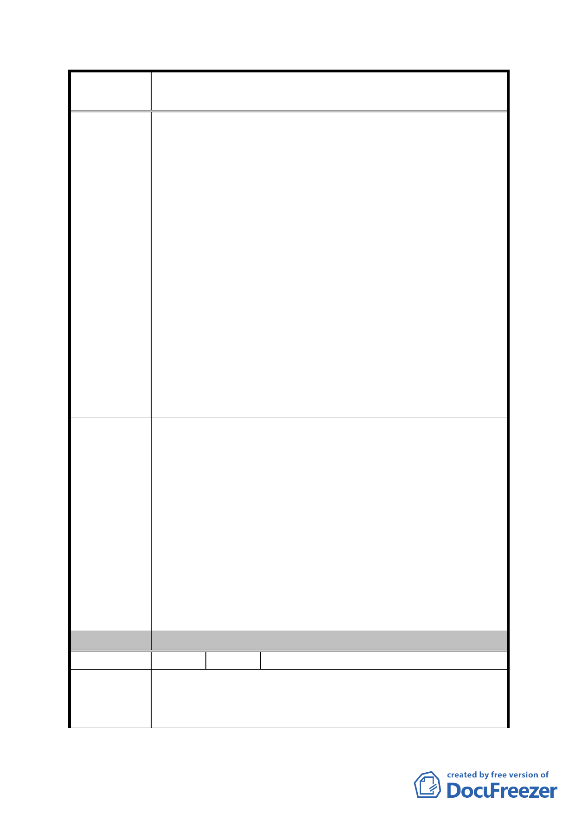

案
名
修訂臺北市「基隆河（中山橋至成美橋段）附近地區土地使
用分區與都市設計管制要點」（北段地區）計畫案
七、在相關配套措施如公園、綠地、學校等明顯不足的情況
下，大彎北段商業區全面開放作住宅使用實屬不宜，除
可能導致交通混亂，居住品質也不會好。且就好好看案
例而言，容積獎勵再加上開放作住宅使用就等於是雙重
優惠。
八、「台北好好看」回饋的檢討應從原始基準樓地板面積到
所增加樓地板面積之價差，訂定一回饋比例予市府才符
合公平原則。或者請業者將所獲容積獎勵之價差提撥一
定比例做為台北市民承購時之優惠條件本人亦可接
受。即回饋上要有一套明確的機制可供操作才行。
九、個人最堅持的是「台北好好看」的操作在政策上應有延
續性，讓後來者都可以比照辦理並適用，小基地也才有
機會能整合到 1500 坪的申請門檻，這樣才符合公平原
則而非圖利某特定對象。
十、整個「台北好好看」當初在推薦過程的依據是什麼，至
今仍說不清楚。
一、程序上大彎北段的細部計畫通盤檢討案應先審定再進行
「台北好好看」等大型開發案的專案變更。
二、有關「台北好好看」之容積獎勵上限不應超過基準容積
之50％。
三、大彎北段地區之建築物高度建議放寬為 60 公尺為宜。
建 議 辦 法 四、在相關配套措施明顯不足的情況下，大彎北段商業區全
面開放作住宅使用實屬不宜。
五、「台北好好看」案內回饋的檢討，要有一套明確的機制
可供操作才行。
六、「台北好好看」的操作在政策上應具有延續性，讓後來
者都可以比照辦理並適用。
委 員 會 決 議 同編號 1。
編 號 35 陳情人 王議員孝維 98.11.11 書面意見
一、必須先完成通盤檢討程序，才能處理台北好好看申請案。
陳 情 理 由 二、高度只能放寬至60公尺。
三、使用分區若要放寬，必須全面放寬，且須考量該區住宅
- 96 -